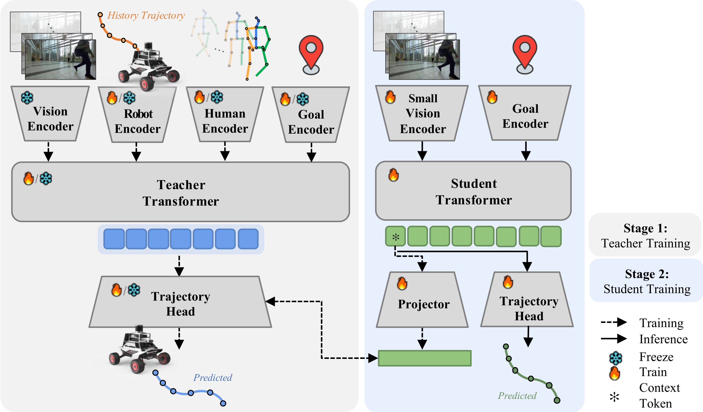
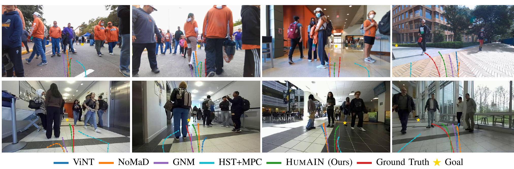

Effective social robot navigation requires sensitivity to human behavior, often revealed through subtle skeletal cues like gait and orientation. We present Human-Aware Implicit Social Robot Navigation (HumAIN), a novel framework that fuses implicit social cues directly into the planning loop via knowledge distillation. We first employ a transformer-based teacher model that fuses rich multi-modal inputs — including historic images, skeletal keypoints, robot state, and a robot's target goal — to learn robust, human-aware representations for the robot's future trajectory planning. To enable real-time deployment, we then distill this knowledge into a lightweight student model. By optimizing for both trajectory reconstruction and latent feature alignment with the teacher, the student learns to infer complex social dynamics from minimal inputs. Bridging the prediction–planning gap with an efficient distilled architecture, our method enables robots to reason about human behavior in a manner that is adaptive, robust, and socially compliant. We validate HumAIN through extensive experiments, where it improves navigation compliance by an average of 29.8% across all metrics compared to state-of-the-art baselines. These results highlight the benefit of using implicit, whole-body cues to achieve human-like navigation awareness on resource-constrained platforms.

Stage 1 — Teacher (privileged). A high-capacity transformer fuses egocentric RGB, robot kinematic history, a goal token, and privileged human states (3D skeletal keypoints, relative position, and facing direction for up to 10 people). A body-part-aware human encoder partitions keypoints into head, torso, arms, and legs, and a hierarchical robot-centric fusion pipeline reasons over social interaction → vision grounding → goal. A 4-layer trajectory head produces both the predicted path and a latent manifold that encapsulates high-fidelity social semantics.
Stage 2 — Student (deployment). The lightweight student sees only raw images and the goal. It compresses the scene into a single CLS token and is trained with a dual objective: a trajectory imitation loss against ground truth plus a feature-alignment loss that pulls its belief state toward the frozen teacher's privileged representation. This forces the student to implicitly infer the missing whole-body social cues — so it stays socially compliant without any pose tracking at test time.

| Method | ADE (m) ↓ | FDE (m) ↓ | AOE (rad) ↓ |
|---|---|---|---|
| ViNT | 0.756 | 1.304 | 0.203 |
| NoMaD | 0.853 | 1.561 | 0.251 |
| GNM | 0.755 | 1.254 | 0.219 |
| HST + MPC | 0.891 | 1.886 | 0.313 |
| HumAIN (Ours) | 0.578 | 1.064 | 0.159 |
We train on SCAND and evaluate on both its held-out test set and an independent out-of-distribution set collected with an AgileX Scout Mini. We report Average Displacement Error (ADE), Final Displacement Error (FDE), and Average Orientation Error (AOE), treating divergence from expert trajectories as a proxy for social compliance.
@inproceedings{song2026humain,
title = {HumAIN: Human-Aware Implicit Social Robot Navigation},
author = {Song, Daeun and Le, Nhat and Chen, Jeffrey and Nazeri, Mohammad
and Payandeh, Amirreza and Chandra, Rohan and Mirsky, Reuth
and Mead, Ross and Xiao, Ling and Xiao, Xuesu},
booktitle = {IEEE/RSJ International Conference on Intelligent Robots and Systems (IROS)},
year = {2026}
}